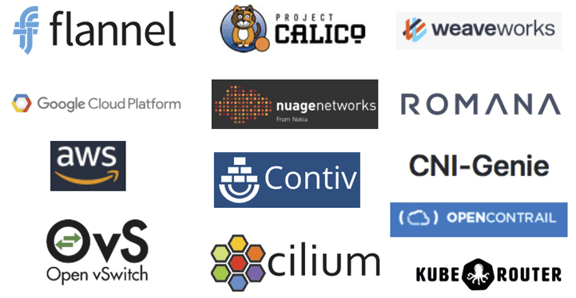
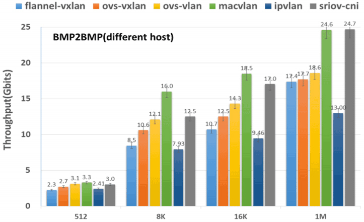
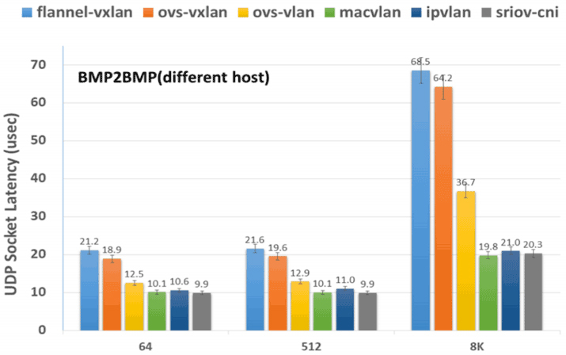

- 00 _导读 _ 什么是“The Fenix Project”？.md.html
- 00 开篇词 _ 如何构建一个可靠的分布式系统？.md.html
- 01 _ 原始分布式时代：Unix设计哲学下的服务探索.md.html
- 02 _ 单体系统时代：应用最广泛的架构风格.md.html
- 03 _ SOA时代：成功理论与失败实践.md.html
- 04 _ 微服务时代：SOA的革命者.md.html
- 05 _ 后微服务时代：跨越软件与硬件之间的界限.md.html
- 06 _ 无服务时代：“不分布式”云端系统的起点.md.html
- 07 _ 远程服务调用（上）：从本地方法到远程方法的桥梁.md.html
- 08 _ 远程服务调用（下）：如何选择适合自己的RPC框架？.md.html
- 09 _ RESTful服务（上）：从面向过程编程到面向资源编程.md.html
- 10 _ RESTful服务（下）：如何评价服务是否RESTful？.md.html
- 11 _ 本地事务如何实现原子性和持久性？.md.html
- 12 _ 本地事务如何实现隔离性？.md.html
- 13 _ 全局事务和共享事务是如何实现的？.md.html
- 14 _ 分布式事务之可靠消息队列.md.html
- 15 _ 分布式事务之TCC与SAGA.md.html
- 16 _ 域名解析系统，优化HTTP性能的第一步.md.html
- 17 _ 客户端缓存是如何帮助服务器分担流量的？.md.html
- 18 _ 传输链路，优化HTTP传输速度的小技巧.md.html
- 19 _ 如何利用内容分发网络来提高网络性能？.md.html
- 20 _ 常见的四层负载均衡的工作模式是怎样的？.md.html
- 21 _ 服务端缓存的三种属性.md.html
- 22 _ 分布式缓存如何与本地缓存配合，提高系统性能？.md.html
- 23 _ 认证：系统如何正确分辨操作用户的真实身份？.md.html
- 24 _ 授权（上）：系统如何确保授权的过程可靠？.md.html
- 25 _ 授权（下）：系统如何确保授权的结果可控？.md.html
- 26 _ 凭证：系统如何保证与用户之间的承诺是准确完整且不可抵赖的？.md.html
- 27 _ 保密：系统如何保证敏感数据无法被内外部人员窃取滥用？.md.html
- 28 _ 传输（上）：传输安全的基础，摘要、加密与签名.md.html
- 29 _ 传输（下）：数字证书与传输安全层.md.html
- 30 _ 验证：系统如何确保提交给服务的数据是安全的？.md.html
- 31 _ 分布式共识（上）：想用好分布式框架，先学会Paxos算法吧.md.html
- 32 _ 分布式共识（下）：Multi Paxos、Raft与Gossip，分布式领域的基石.md.html
- 33 _ 服务发现如何做到持续维护服务地址在动态运维中的时效性？.md.html
- 34 _ 路由凭什么作为微服务网关的基础职能？.md.html
- 35 _ 如何在客户端实现服务的负载均衡？.md.html
- 36 _ 面对程序故障，我们该做些什么？.md.html
- 37 _ 要实现某种容错策略，我们该怎么做？.md.html
- 38 _ 限流的目标与模式.md.html
- 39 _ 如何构建零信任网络安全？.md.html
- 40 _ 如何实现零信任网络下安全的服务访问？.md.html
- 41 _ 分布式架构中的可观测到底说的是什么？.md.html
- 42 _ 分析日志真的没那么简单.md.html
- 43 _ 一个完整的分布式追踪系统是什么样子的？.md.html
- 44 _ 聚合度量能给我们解决什么问题？.md.html
- 45 _ 模块导学：从微服务到云原生.md.html
- 46 _ 容器的崛起（上）：文件、访问、资源的隔离.md.html
- 47 _ 容器的崛起（下）：系统、应用、集群的封装.md.html
- 48 _ 以容器构建系统（上）：隔离与协作.md.html
- 49 _ 以容器构建系统（下）：韧性与弹性.md.html
- 50 _ 应用为中心的封装（上）：Kustomize与Helm.md.html
- 51 _ 应用为中心的封装（下）：Operator与OAM.md.html
- 52 _ Linux网络虚拟化（上）：信息是如何通过网络传输被另一个程序接收到的？.md.html
- 53 _ Linux网络虚拟化（下）：Docker所提供的容器通讯方案有哪些？.md.html
- 54 _ 容器网络与生态：与CNM竞争过后的CNI下的网络插件生态.md.html
- 55 _ 谈谈Kubernetes的存储设计理念.md.html
- 56 _ Kubernetes存储扩展架构：一个真实的存储系统如何接入或移除新存储设备？.md.html
- 57 _ Kubernetes存储生态系统：几种有代表性的CSI存储插件的实现.md.html
- 58 _ Kubernetes的资源模型与调度器设计.md.html
- 59 _ 透明通讯的涅槃（上）：通讯的成本.md.html
- 60 _ 透明通讯的涅槃（下）：控制平面与数据平面.md.html
- 61 _ 服务网格与生态：聊聊服务网格的两项标准规范.md.html
- 62 _ Fenix's Bookstore的前端工程.md.html
- 63 _ 基于Spring Boot的单体架构.md.html
- 64 _ 基于Spring Cloud的微服务架构.md.html
- 65 _ 基于Kubernetes的微服务架构.md.html
- 66 _ 基于Istio的服务网格架构.md.html
- 67 _ 基于云计算的无服务架构.md.html
- 春节特别放送（上）_ 有的放矢，事半功倍.md.html
- 春节特别放送（下）_ 积累沉淀，知行合一.md.html
- 用户故事 _ 詹应达：持续成长，不惧未来.md.html
- 结束语 _ 程序员之路.md.html
- 结课测试 _ 一套习题，测出你的掌握程度.md.html
- 捐赠
54 _ 容器网络与生态：与CNM竞争过后的CNI下的网络插件生态
你好，我是周志明。前面的两节课，我们学习了Linux系统本身的网络虚拟化知识，今天这节课，我们就来看看这些理论知识实际是如何应用于容器间网络的。
容器网络的第一个业界标准，是源于Docker在2015年发布的libnetwork项目。如果你还记得在“容器的崛起”这个小章节中我提到的关于libcontainer的故事，那从名字上，你就能很容易地推断出libnetwork项目的目的与意义。libnetwork项目是Docker用Golang编写的、专门用来抽象容器间网络通信的一个独立模块。
类似于libcontainer是作为OCI的标准来实现的，libnetwork是作为Docker提出的CNM规范（Container Network Model）的标准实现而设计的。不过，跟ibcontainer因为孵化出runC项目，到今天都仍然广为人知的结局不一样，libnetwork随着Docker Swarm的失败，已经基本上失去了实用的价值，只具备历史与学术研究方面的价值了。
接下来，我就会从CNM规范的出现以及它与CNI的竞争开始说起，带你了解容器间网络所解决的问题。
CNM与CNI
首先，可以说，现在的容器网络的事实标准CNI（Container Networking Interface）与CNM在目标上几乎是完全重叠的，这就决定了CNI与CNM之间，只能是你死我活的竞争关系，而这与容器运行时提到的CRI和OCI的关系明显不一样。CRI与OCI的目标并不相同，所以两者有足够的空间可以和平共处。
不过，尽管CNM规范已是明日黄花，但它作为容器网络的先行者，对后续的容器网络标准的制定仍然有直接的指导意义。
要知道，提出容器网络标准的目的，就是为了把网络功能从容器运行时引擎、或者容器编排系统中剥离出去，毕竟网络的专业性和针对性极强，如果不把它变成外部可扩展的功能，而都由自己来做的话，不仅费时费力，还不讨好。这个特点从下图所列的一大堆容器网络提供商就可见一斑。

另外，网络的专业性与针对性也决定了CNM和CNI都采用了插件式的设计，这样需要接入什么样的网络，就设计一个对应的网络插件即可。所谓的插件，在形式上也就是一个可执行文件，再配上相应的Manifests描述。
为了方便插件编写，CNM把协议栈、网络接口（对应于veth、tap/tun等）和网络（对应于Bridge、VXLAN、MACVLAN等）分别抽象为Sandbox、Endpoint和Network，并在接口的API中提供了这些抽象资源的读写操作。
而CNI中尽管也有Sandbox、Network的概念，其含义也跟CNM的大致相同，不过在Kubernetes资源模型的支持下，它就不需要刻意去强调某一种网络资源应该如何描述、如何访问了，所以在结构上就显得更加轻便。
那么从程序功能上看，CNM和CNI的网络插件提供的能力，都可以划分为网络的管理与IP地址的管理两类，而插件可以选择只实现其中的某一个，也可以全部都实现。下面我们就具体来了解一下。
- 管理网络创建与删除
顾名思义，这项能力解决的是如何创建网络、如何将容器接入到网络，以及容器如何退出和删除网络的问题。这个过程实际上是对容器网络的生命周期管理，如果你更熟悉Docker命令，可以把它类比理解成基本上等同于docker network命令所做的事情。
CNM规范中定义了创建网络、删除网络、容器接入网络、容器退出网络、查询网络信息、创建通信Endpoint、删除通信Endpoint等十个编程接口，而CNI中就更加简单了，只要实现对网络的增加与删除两项操作即可。你甚至不需要学过Golang语言，只从名称上都能轻松看明白以下接口中，每个方法的含义是什么。
type CNI interface {
AddNetworkList (net *NetworkConfigList, rt *RuntimeConf) (types.Result, error)
DelNetworkList (net *NetworkConfigList, rt *RuntimeConf) error
AddNetwork (net *NetworkConfig, rt *RuntimeConf) (types.Result, error)
DelNetwork (net *NetworkConfig, rt *RuntimeConf) error
}
- 管理IP地址分配与回收
这项能力解决的是如何为三层网络分配唯一的IP地址的问题。我们知道，二层网络的MAC地址天然就具有唯一性，不需要刻意考虑如何分配的问题。但是三层网络的IP地址只有通过精心规划，才能保证在全局网络中都是唯一的。否则，如果两个容器之间可能存在相同地址，那它们就最多只能做NAT，而不可能做到直接通信。
相比起基于UUID或者数字序列实现的全局唯一ID产生器，IP地址的全局分配工作要更加困难一些。
首先是要符合IPv4的网段规则，而且得保证不重复，这在分布式环境里就只能依赖etcd、ZooKeeper等协调工具来实现，Docker自己也提供了类似的libkv来完成这项工作；其次是必须考虑到回收的问题，否则一旦Pod发生持续重启，就有可能耗尽某个网段中的所有地址；最后还必须要关注时效性，原本IP地址的获取采用标准的DHCP协议（Dynamic Host Configuration Protocol）就可以了，但DHCP有可能产生长达数秒的延迟，对于某些生存周期很短的Pod，这就已经超出了它的忍受限度，所以在容器网络中，往往Host-Local的IP分配方式会比DHCP更加实用。
总而言之，虽然现在时过境迁，舞台的聚光灯已然落到了CNI身上，但CNM规范作为容器间网络的首个技术规范，依然起到了为继任者指明方向的作用。
CNM到CNI
容器网络标准能够提供一致的网络操作界面，不管是什么网络插件都使用一致的API，这就提高了网络配置的自动化程度和在不同网络间迁移的体验，对最终用户、容器提供商、网络提供商来说，都是三方共赢的事情。
从CNM规范发布以后，借助Docker在容器领域的强大号召力，很快就得到了网络提供商与开源组织的支持，不说专门为Docker设计针对容器互联的网络，最起码也会让现有的网络方案兼容于CNM规范，以便能在容器圈中多分一杯羹，比如Cisco的Contiv、OpenStack的Kuryr、Open vSwitch的OVN（Open Virtual Networking），以及来自开源项目的Calico和Weave等都是CNM阵营中的成员。
而唯一对CNM持有不同意见的，是那些和Docker存在直接竞争关系的产品，比如Docker的最大竞争对手，来自CoreOS公司的RKT容器引擎。
其实凭良心说，并不是其他容器引擎想刻意去抵制CNM，而是Docker制定CNM规范时，完全是基于Docker本身来设计的，并没有考虑CNM用于其他容器引擎的可能性。因而，为了平衡CNM规范的影响力，也是为了在Docker的垄断背景下寻找一条出路，RKT提出了与CNM目标类似的“RKT网络提案”（RKT Networking Proposal）。
事实上，一个业界标准成功与否，很大程度上取决于它的支持者阵营的规模，对于容器网络这种插件式的规范就更是如此了。Docker力推的CNM，毫无疑问是当时统一容器网络标准的最有力的竞争者，如果没有外力的介入，有很大的可能会成为最后的胜利者。
然而，影响容器网络发展的外力还是出现了，即使我之前没有提过CNI，你也应该很容易猜到，在容器圈里能够掀翻Docker的“外力”，也就只有Kubernetes一家而已。
Kubernetes开源的初期（Kubernetes 1.5提出CRI规范之前），在容器引擎上是选择彻底绑定于Docker的，但是在容器网络的选择上，Kubernetes一直都坚持独立于Docker，自己来维护网络。
在CNM和CNI提出以前的早期版本里，Kubernetes会使用Docker的空置网络模式（--network=none）来创建Pause容器，然后通过内部的kubenet来创建网络设施，再让Pod中的其他容器加入到Pause容器的名称空间中，共享这些网络设施。
额外知识：kubenet- kubenet是kubelet内置的一个非常简单的网络，它是采用网桥来解决Pod间通信。kubenet会自动创建一个名为cbr0的网桥，当有新的Pod启动时，会由kubenet自动将其接入cbr0网桥中，再将控制权交还给kubelet，完成后续的Pod创建流程。kubenet采用Host-Local的IP地址管理方式，具体来说是根据当前服务器对应的Node资源上的
PodCIDR字段所设的网段，来分配IP地址。当有新的Pod启动时，会由本地节点的IP段中分配一个空闲的IP给Pod使用。
其实，在CNM规范还没有提出之前，Kubernetes自己来维护网络是必然的结果，因为Docker自带的网络基本上只聚焦于如何解决本地通信，完全无法满足Kubernetes跨集群节点的容器编排的需要。而当CNM规范提出之后，原本Kubernetes应该是除Docker外的最大受益者才对，毕竟CNM的价值就是能很方便地引入其他网络插件，来替代掉Docker自带的网络。
但Kubernetes却对Docker的CNM规范表现得很是犹豫，经过一番评估考量，Kubernetes最终决定，转为支持当时极不成熟的RKT的网络提案，他们与CoreOS合作，以RKT网络提案为基础发展出了CNI规范。
Kubernetes Network SIG的Leader、Google的工程师蒂姆·霍金（Tim Hockin）也曾专门撰写过一篇文章《Why Kubernetes doesn’t use libnetwork》，来解释为什么Kubernetes要拒绝CNM与libnetwork。
当时，容器编排战争还处于三国争霸（Kubernetes、Apache Mesos、Docker Swarm）的拉锯阶段，即使强势如Kubernetes，拒绝CNM其实也要冒不小的风险，付出很大的代价，因为这个决定不可避免地会引发一系列技术和非技术的问题，比如网络提供商要为Kubernetes专门编写不同的网络插件、由docker run启动的独立容器将会无法与Kubernetes启动的容器直接相互通信，等等。
而促使Kubernetes拒绝CNM的理由，也同样有来自于技术和非技术方面的。
首先在技术方面，Docker的网络模型做出了许多对Kubernetes无效的假设：Docker的网络有本地网络（不带任何跨节点协调能力，比如Bridge模式就没有全局统一的IP分配）和全局网络（跨主机的容器通信，例如Overlay模式）的区别，本地网络对Kubernetes来说毫无意义，而全局网络又默认依赖libkv，来实现全局IP地址管理等跨机器的协调工作。
这里的libkv，是指Docker建立的lib*家族中的另一位成员，它主要是用来对标etcd、ZooKeeper等分布式K/V存储，而这对于已经拥有了etcd的Kubernetes来说就如同鸡肋。
然后在非技术方面，Kubernetes决定放弃CNM的原因，很大程度上还是由于他们与Docker在发展理念上的冲突，Kubernetes当时已经开始推进Docker从必备依赖变为可选引擎的重构工作了，而Docker则坚持CNM只能基于Docker来设计。
蒂姆·霍金在他的文章中举了一个例子：CNM的网络驱动没有向外部暴露网络所连接容器的具体名称，只使用了一个内部分配的ID来代替，这就让外部（包括网络插件和容器编排系统）很难将网络连接的容器与自己管理的容器对应关联起来，而当他们向Docker开发人员反馈这个问题时，却以“工作符合预期结果”（Working as Intended）为理由，被直接关闭掉了这个问题。
蒂姆·霍金还专门列出了这些问题的详细清单，比如libnetwork #139、libnetwork #486、libnetwork #514、libnetwork #865、docker #18864。这种设计，被Kubernetes认为是在人为地给非Docker的第三方容器引擎使用CNM设置障碍。而在整个沟通过程中，Docker表现得也很强硬，明确表示他们对偏离当前路线或委托控制的想法都不太欢迎。
其实，刚刚提到的这些“非技术”的问题，即使没有Docker的支持，Kubernetes自己也不是不能从“技术上”去解决，但Docker的理念会让Kubernetes感到忧虑，因为Kubernetes在Docker之上扩展了很多功能，而Kubernetes却并不想这些功能永远绑定在Docker之上。
CNM与libnetwork是2015年5月1日发布的，CNI则是在2015年7月发布，两者的正式诞生只相差不到两个月时间，可见这显然是竞争的需要，而不是什么单纯的巧合。
当然，在五年之后的今天，这场容器网络的话语权之争已经尘埃落定，CNI获得了全面的胜利，除了Kubernetes和RKT之外，Amazon ECS、RedHat OpenShift、Apache Mesos、Cloud Foundry等容器编排圈子中，除了Docker之外，其他具有影响力的参与者都已经宣布支持CNI规范，而原本已经加入了CNM阵营的Contiv、Calico、Weave网络提供商，也纷纷推出了自己的CNI插件。
那么下面，我就带你具体了解下当前的网络插件生态，看看目前业界常用的容器间网络大体上是如何实现的。
网络插件生态
首先要说明的是，到今天为止，支持CNI的网络插件已经多达数十种，我不太可能逐一细说。不过，跨主机通信的网络实现方式，来去也就Overlay模式、路由模式、Underlay模式这三种，所以接下来，我就不妨以网络实现模式为主线，每种模式给你介绍一个具有代表性的插件，以达到对网络插件生态窥斑见豹的效果。
- Overlay模式
我们已经学习过Overlay网络，知道这是一种虚拟化的上层逻辑网络，好处在于它不受底层物理网络结构的约束，有更大的自由度，更好的易用性；坏处是由于额外的包头封装，导致信息密度降低，额外的隧道封包解包会导致传输性能下降。
而在虚拟化环境（如 OpenStack）中，网络限制往往比较多，比如不允许机器之间直接进行二层通信，只能通过三层转发。那么，在这类被限制网络的环境里，基本上就只能选择Overlay网络插件。
常见的Overlay网络插件有Flannel（VXLAN模式）、Calico（IPIP模式）、Weave，等等。这里我就以Flannel-VXLAN为例来给你介绍一下。
由CoreOS开发的Flannel，可以说是最早的跨节点容器通信解决方案，在很多其他网络插件的设计中，都能找到Flannel的影子。
早在2014年，VXLAN还没有进入Linux内核的时候，Flannel就已经开始流行了。当时的Flannel只能采用自定义的UDP封包，实现自己私有协议的Overlay网络，由于封包、解包的操作只能在用户态中进行，而数据包在内核态的协议栈中流转，这就导致数据要反复在用户态、内核态之间拷贝，因此性能堪忧，从此Flannel就给人留下了速度慢的坏印象。
而当VXLAN进入了Linux内核以后，这种内核态用户态的转换消耗已经完全消失了，Flannel-VXLAN的效率比起Flannel-UDP有了很大提升，所以目前已经成为最常用的容器网络插件之一。
- 路由模式
路由模式其实是属于Underlay模式的一种特例，这里我把它单独作为一种网络实现模式来给你介绍一下。
相比起Overlay网络，路由模式的主要区别在于，它的跨主机通信是直接通过路由转发来实现的，因而不需要在不同主机之间进行隧道封包。这种模式的好处是性能相比Overlay网络有明显提升，而坏处是路由转发要依赖于底层网络环境的支持，并不是你想做就能做到的。
路由网络要求要么所有主机都位于同一个子网之内，都是二层连通的；要么不同二层子网之间由支持边界网关协议（Border Gateway Protocol，BGP）的路由相连，并且网络插件也同样支持BGP协议去修改路由表。
在上节课我介绍Linux网络基础知识的时候，提到过Linux下不需要专门的虚拟路由，因为Linux本身就具备路由的功能。而路由模式就是依赖Linux内置在系统之中的路由协议，把路由表分发到子网的每一台物理主机的。这样，当跨主机访问容器时，Linux主机可以根据自己的路由表得知，该容器具体位于哪台物理主机之中，从而直接将数据包转发过去，避免了VXLAN的封包解包而导致的性能降低。
常见的路由网络有Flannel（HostGateway模式）、Calico（BGP模式）等等。这里我就以Flannel-HostGateway为例，Flannel通过在各个节点上运行的Flannel Agent（Flanneld），把容器网络的路由信息设置到主机的路由表上，这样一来，所有的物理主机都拥有整个容器网络的路由数据，容器间的数据包可以被Linux主机直接转发，通信效率与裸机直连都相差无几。
不过，因为Flannel Agent只能修改它运行主机上的路由表，一旦主机之间隔了其他路由设备，比如路由器或者三层交换机，这个包就会在路由设备上被丢掉，而要解决这种问题，就必须依靠BGP路由和Calico-BGP这类支持标准BGP协议，修改路由表的网络插件共同协作才行。
- Underlay模式
这里的Underlay模式特指让容器和宿主机处于同一网络，两者拥有相同的地位的网络方案。Underlay网络要求容器的网络接口能够直接与底层网络进行通信，因此这个****模式是直接依赖于虚拟化设备与底层网络能力的。常见的Underlay网络插件，有MACVLAN、SR-IOV（Single Root I/O Virtualization）等。
实际上，对于真正的大型数据中心、大型系统来说，Underlay模式才是最有发展潜力的网络模式。这种方案能够最大限度地利用硬件的能力，往往有着最优秀的性能表现。但也是由于它直接依赖于硬件与底层网络环境，必须根据软、硬件情况来进行部署，所以很难能做到Overlay网络那样的开箱即用的灵活性。
这里我以SR-IOV为例来给你介绍下。SR-IOV不是某种专门的网络名字，而是一种将PCIe设备共享给虚拟机使用的硬件虚拟化标准，目前用在网络设备上的应用比较多，理论上也可以支持其他的PCIe硬件。通过SR-IOV，程序员能够让硬件在虚拟机上实现独立的内存地址、中断和DMA流，而不需要虚拟机管理系统的介入。
对于容器系统来说，SR-IOV的价值是可以直接在硬件层面虚拟多张网卡，并且以硬件直通（Passthrough）的形式，交付给容器使用。但SR-IOV直通部署起来一般都很繁琐，现在容器用的SR-IOV方案，不少是使用MACVTAP来对SR-IOV网卡进行转接的。
不过，虽然MACVTAP提升了SR-IOV的易用性，但是这种转接又会带来额外的性能损失，并不一定会比其他网络方案有更好的表现。
好了，在了解过CNI插件的大致实现原理与分类后，相信你的下一个问题，就是哪种CNI网络最好？如何选择合适的CNI插件？
其实，选择CNI网络插件主要有两方面的考量因素。
首先就必须是你系统所处的环境是支持的，这点我在前面已经有针对性地介绍过。然后在环境可以支持的前提下，另一个因素就是性能与功能方面是否合乎你的要求。
关于性能方面，这里我引用一组测试数据来供你参考。这些数据来自于2020年8月刊登在IETF的论文《Considerations for Benchmarking Network Performance in Containerized Infrastructures》，其中测试了不同CNI插件在裸金属服务器之间（BMP to BMP，Bare Metal Pod）、虚拟机之间（VMP to VMP，Virtual Machine Pod），以及裸金属服务器与虚拟机之间（BMP to VMP）的本地网络和跨主机网络的通信表现。
其中，最具代表性的是裸金属服务器之间的跨主机通信，这里我把它的结果列了出来，你可以去看看：


那么，从测试结果来看，MACVLAN和SR-IOV这样的Underlay网络插件的吞吐量最高、延迟最低，所以只从网络性能上看，它们肯定是最优秀的。而相对来说Flannel-VXLAN这样的Overlay网络插件，它的吞吐量只有MACVLAN和SR-IOV的70%左右，延迟更是高了两至三倍之多。
所以说，Overlay为了易用性、灵活性所付出的代价还是不可忽视的，但是对于那些不以网络I/O为性能瓶颈的系统来说，这样的代价并不是一定不能接受，就看你心中对通用性与性能是如何权衡取舍的了。
而在功能方面的问题就比较简单了，这完全取决于你的需求是否能够满足。
对于容器编排系统来说，网络并不是孤立的功能模块，只提供网络通信就可以的，比如Kubernetes的NetworkPolicy资源是用于描述“两个Pod之间是否可以访问”这类ACL策略。但它不属于CNI的范畴，所以不是每个CNI插件都会支持NetworkPolicy的声明。
如果你有这方面的需求，就应该放弃Flannel，去选择Calico、Weave等插件。类似的其他功能上的选择的例子还有很多，这里我就不一一列举了。
小结
如何保证信息安全准确快速地出传输、如何更好地连接不同的集群节点、如何连接异构的容器云平台，这些都是我们需要考虑的一系列的网络问题。
当然，容器网络技术也在持续地演进之中。我们要知道，容器间网络是把应用从单机扩展到集群的关键钥匙，但它也把虚拟化容器推入到了更复杂的境地，网络要去适应这种变化，要去适配容器的各种需求，所以才出现了百花齐放的容器网络方案。
一课一思
这节课里出现了许多中不同的容器网络，你认为对这些网络的选择，主要应该是架构师的职责，还是运维工程师的职责呢？
欢迎在留言区分享你的思考和见解。如果你觉得有收获，也欢迎把今天的内容分享给更多的朋友。感谢你的阅读，我们下一讲再见。
© 2019 - 2023 Liangliang Lee. Powered by gin and hexo-theme-book.